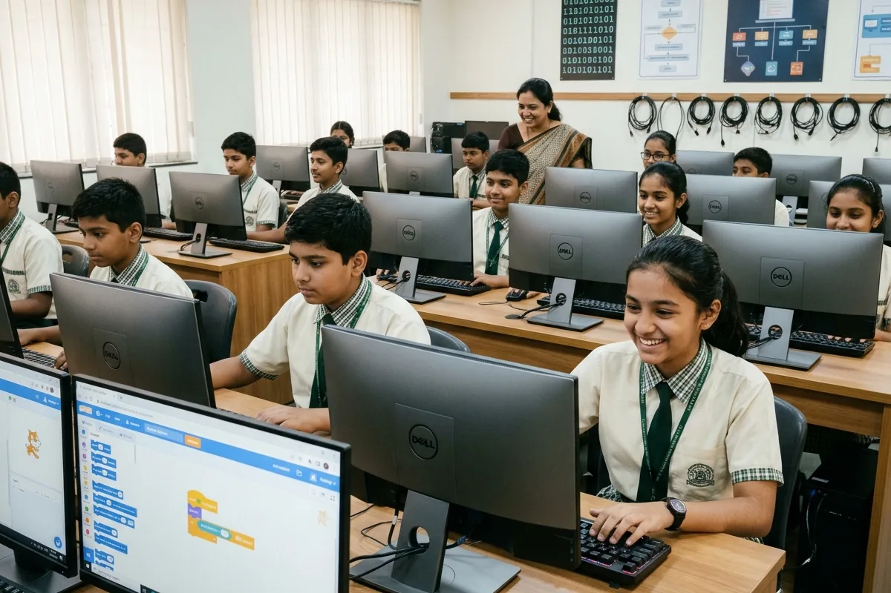
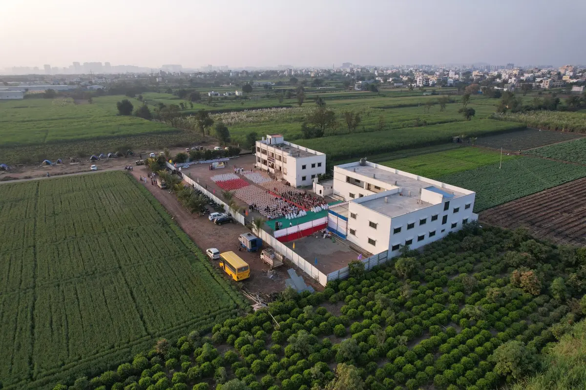
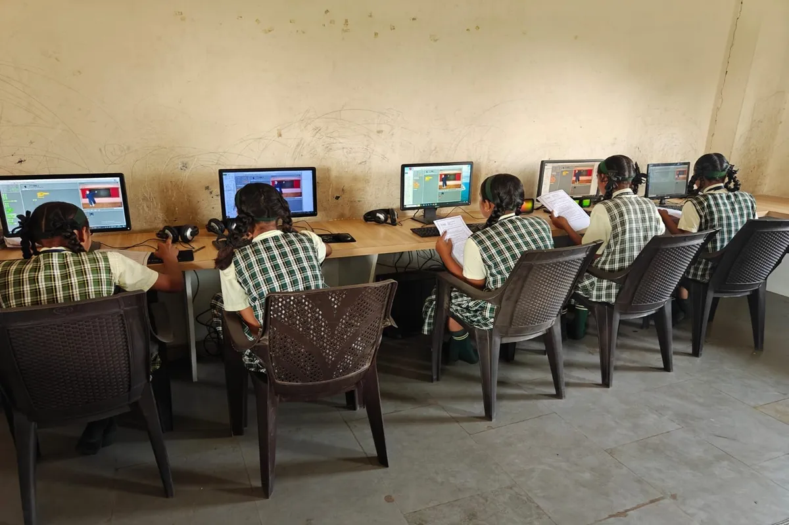
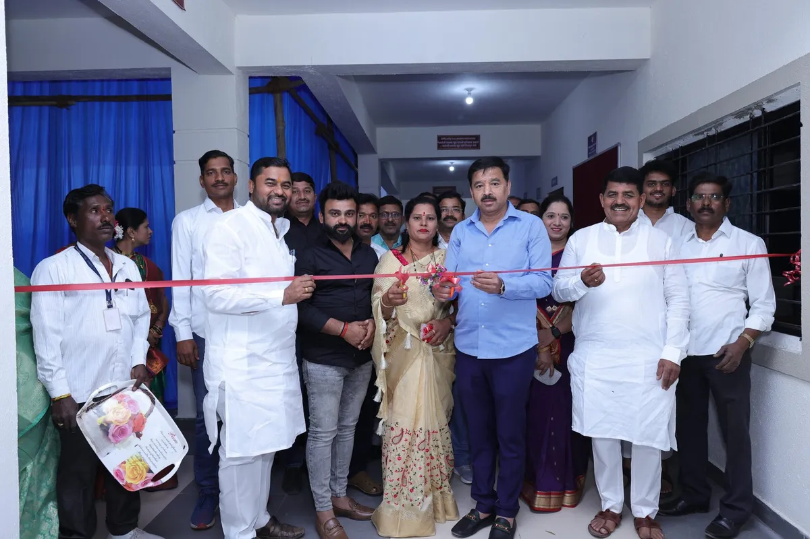

Building knowledge.
Inspiring excellence.
Providing disciplined, concept-based Maharashtra State Board education in Manjari Khurd, Pune — nurturing intellectual rigor, moral values, and academic excellence from early childhood through Junior College.
Education as the Illumination of Intellect and Character
At Dnyandeep English Medium School, the traditional Indian Mashal (torch) embodies our educational mission: to dispel the darkness of ignorance with the light of knowledge, wisdom, and moral integrity.
Established in 1944 in Manjari Khurd, Pune, the institution provides education from the foundational primary level through secondary school (Junior College) with an uncompromising emphasis on student discipline, academic rigor, and personal care.
Our teachers employ concept-oriented pedagogy combining classroom lessons with experiential laboratory experiments, library research, physical training, and cultural arts — ensuring each child develops academic capability and civic responsibility.

Interactive classroom environment: Teachers providing individual attention and conceptual guidance to young learners.
A Cohesive Scholastic Continuum from Age 3 to 16
Every grade level at Dnyandeep builds upon the previous, fostering cognitive strength, multilingual fluency, and board examination preparedness.
Pre-Primary Section
Nursery, Jr. KG & Sr. KGJoyful, play-integrated early childhood education focusing on phonics, motor skills, sensory discovery, and emotional warmth. Children develop early literacy and self-confidence through storytelling, drawing, and interactive games.
Primary Section
Foundational SchoolingStructured learning as per the Maharashtra State Board. Strong fundamentals in English grammar, arithmetic reasoning, Environmental Studies, Marathi, and Hindi, supplemented by weekly art, physical training, and basic computer exposure.
Secondary SSC Section
Board PreparationRigorous Maharashtra SSC Board curriculum delivered with dedicated subject mentors. Regular science practicals, mock board examinations, systematic doubt-clearing sessions, and leadership opportunities cultivate calm examination confidence.
Why Parents Choose Dnyandeep for Their Children
Grounded in over eight decades of educational dedication in Pune, our school pairs strict academic rigor with compassionate personal mentoring.
Legacy Since 1944
With deep educational roots in Manjari Khurd, our long-standing tradition represents stability, trust, and continuous service to multiple generations of learners.
Maharashtra State Board Rigor
Concept-driven syllabus delivery emphasizing fundamental mathematics, scientific reasoning, language proficiency, and complete SSC examination preparation.
Character & Discipline
Individual student attention within a disciplined, caring environment where moral integrity, mutual respect, and civic duty are actively cultivated every day.
Equipped Spaces Designed for Focused Scholastic Pursuit
The school provides well-maintained laboratories, research resources, and expansive sports grounds at Shiv Tirth, Pawar Wasti Road, Manjari Khurd.

Science Laboratories
Equipped with apparatus, glassware, microscopes, and specimens for Physics, Chemistry, and Biology experiments and annual exhibitions.

Modern Computer Lab
Individual computer systems with guided instruction in computer operations, digital literacy, and basic programming logic.

School Library
Comprehensive collection of textbooks, reference materials, children’s literature, Marathi storybooks, and competitive examination guides.

Sports Ground
Expansive outdoor playground supporting athletics, kho-kho, kabaddi, volleyball, and physical fitness periods under teacher supervision.
Beyond the Classroom: Character, Sports, and Cultural Expression
Scholastic achievement flourishes when balanced with physical vitality and creative exploration. At Dnyandeep, student life incorporates daily physical education, annual athletic competitions, cultural celebrations, and arts.
Athletics & Physical Training
Dedicated sports ground coaching in cricket, kho-kho, kabaddi, and athletic drills building endurance and teamwork.
Cultural & Performing Arts
Annual day concerts, traditional festivals, elocution, debate, and music cultivating confidence on stage.

School grounds: Fostering sporting spirit, physical fitness, and student camaraderie.
Achievements Grounded in Consistency and Effort
Our students consistently demonstrate academic capability in Maharashtra State Board examinations, combined with active participation in district athletics and community initiatives.
Consistent performance in Maharashtra State Board secondary examinations.
Steadfast service to the community of Manjari Khurd and Pune since 1944.
Balanced teacher-student ratio ensuring conceptual clarity and care.
Comprehensive annual sports day, science exhibitions, and cultural concerts.
Moments and Environments of Learning at Dnyandeep
A curated photographic perspective through our learning spaces, campus grounds, and scholastic activities in Manjari Khurd.

Main Campus Building
Institutional building and academic classrooms

Computer Science Workstations
Practical IT and digital literacy laboratories

Campus Grounds & Entry
Secure, tree-lined school grounds in Manjari Khurd
Library & Reading Space
Rich collection of reference books and quiet reading rooms
Science Practical Laboratory
Hands-on experiment apparatus for physics, chemistry & biology

Courtyard & Natural Surroundings
Open-air recreational spaces and perimeter trees
A Transparent, Merit-Driven Admission Process
We welcome prospective students and parents seeking a grounded, disciplined, and high-quality educational environment. The school follows transparent, affordable fee structures without hidden costs.
Online Registration
Submit the official online application form with student and parent information.
Document Verification & Interaction
Visit the campus office with birth certificate, previous school marksheets, and Transfer Certificate (for Std 2 and above).
Admission Confirmation
Complete fee payment formalities and receive the admission confirmation receipt and welcome circular.
Campus Location: Shiv Tirth, Pawar Wasti Road, near Maher Vatsalyadham, Manjari Khurd, Pune 412307
Inquiry Telephones: +91-8484844067 / +91-7276095235
Official Email: info@des.org.in
Office Timings: Monday to Friday: 9:00 AM – 3:00 PM
“Education is the eternal flame that awakens intellect, instills self-discipline, and empowers young people to serve society with honor.”